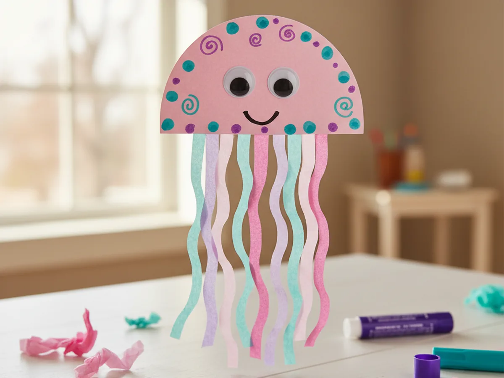
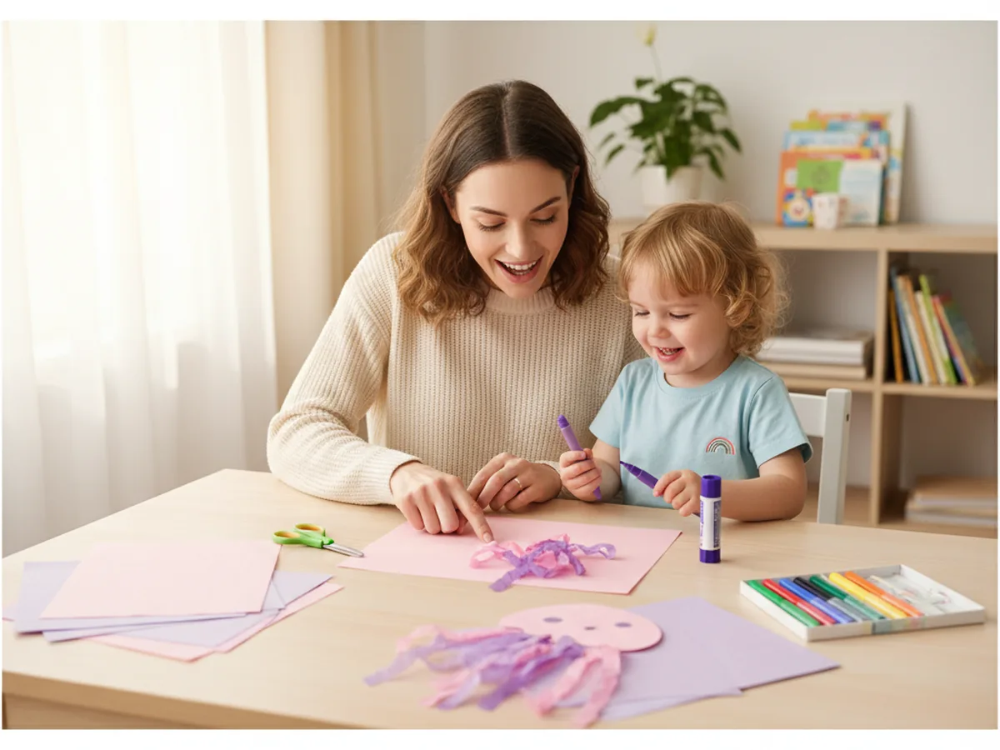
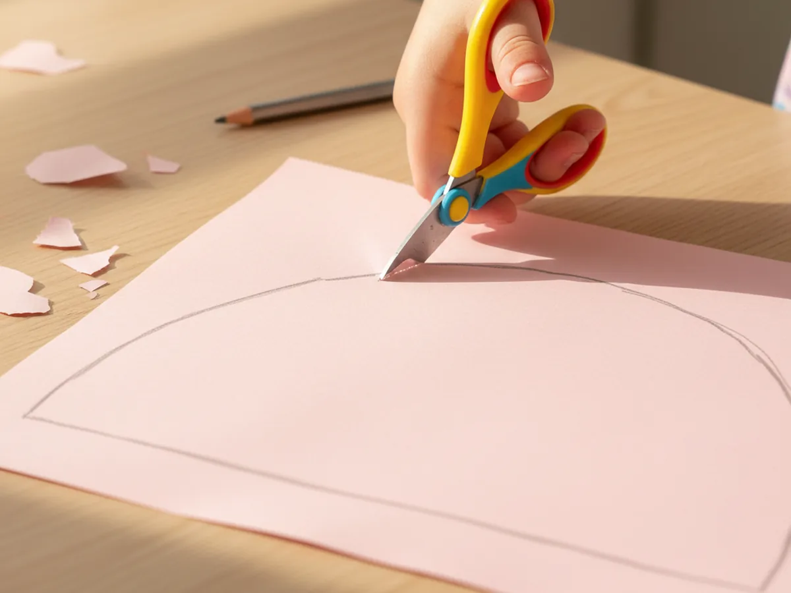
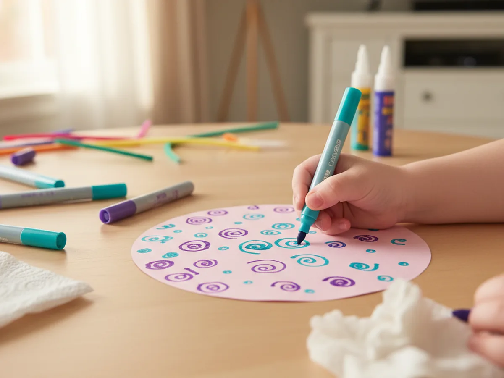
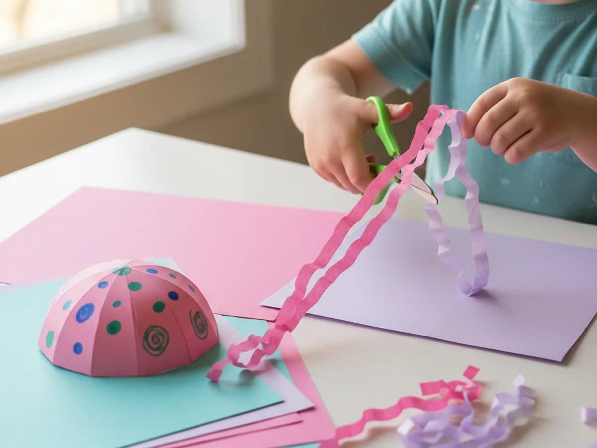
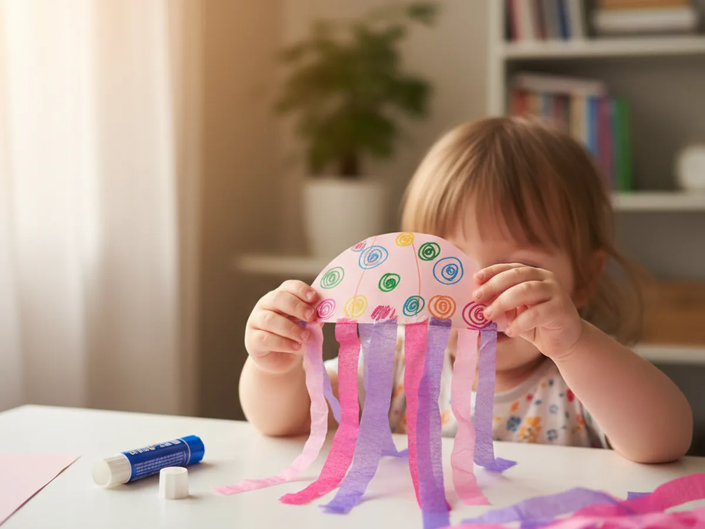
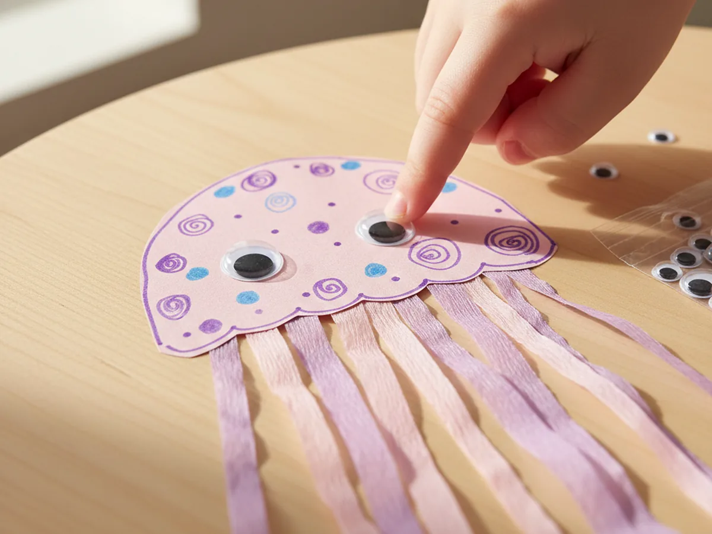
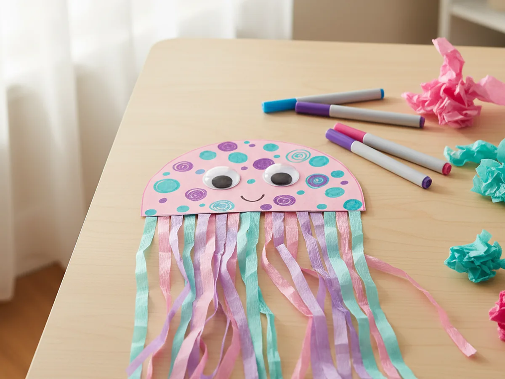

If your little one loves the ocean, this paper jellyfish craft is the sweetest way to bring a bit of underwater magic onto your kitchen table. It uses simple supplies you probably already have at home, takes about 25 minutes from start to finish, and ends with a soft, dreamy little jellyfish that almost looks like it is floating. There is no paint, very little mess, and so many smiles.
Even toddlers can help with most of the steps, and older kids can really go to town decorating their jellyfish however they imagine it. Every single one comes out looking a little different, and that is exactly what makes this paper jellyfish craft for kids such a sweet shared moment.
Why Kids Love This Craft
Jellyfish are one of those creatures that completely fascinate young children. They wobble, they glow, they have those long flowing tentacles, and they live in this mysterious underwater world. When a child gets to make their own paper jellyfish craft, that wonder turns into something they can hold in their hands and show off proudly. There is real pride in saying "look, I made a jellyfish."
This project is also wonderful for little hands. Cutting strips of tissue paper builds fine motor control. Choosing colors and arranging the tentacles encourages creative decision-making. And gluing the pieces in place gives kids a sense of order and accomplishment. It looks like simple play, but a lot of quiet learning is happening underneath.
Best of all, this simple paper jellyfish craft gives you a low-stress, screen-free moment together. You can chat about ocean animals, sing a little jellyfish song, or make up a story about where your jellyfish lives. Those little side conversations are often the part children remember most.

What You'll Need
Here is everything you will need to make this easy paper jellyfish craft at home. Set everything out on the table beforehand so the activity flows nicely once your child sits down.
- Crayola Construction Paper (240 sheets, assorted colors), soft pink, purple, or light blue work best for the jellyfish body.
- Craft Craze Tissue Paper (100 sheets, 25 assorted colors), used to cut wavy strips for the tentacles.
- Fiskars Training Scissors for Kids, spring-action and blunt-tipped, perfect for ages 3 and up.
- Elmer's School Glue Sticks (30-pack), washable and easy for small hands to grip.
- DECORA Self-Adhesive Googly Eyes (assorted sizes), two per jellyfish, peel and press.
- Crayola Washable Broad Line Markers, for decorating the body and drawing the smile.
- A pencil, for tracing the dome body shape before cutting.
Step-by-Step Instructions
This paper jellyfish craft step by step is genuinely easy to follow. Take it one little step at a time and let your child do as much as they can on their own.
Step 1: Cut the Jellyfish Body
Pick a soft color for the body. Light pink, lavender, or pale blue all give that lovely dreamy jellyfish look. Take a sheet of construction paper and use a pencil to draw a large half-circle, like a dome or an upside-down bowl shape, that fills most of the page. The flat straight edge is the bottom, where the tentacles will eventually attach. Once the shape is drawn, have your child cut along the line.
For toddlers and younger preschoolers, draw the dome for them and let them practice cutting along the curve. Wobbly edges are completely fine and actually make the jellyfish look more natural and handmade.

Step 2: Decorate the Body
Before you add the tentacles, this is the perfect moment to decorate the dome. Hand your child a few washable markers in colors that pop against the body, like teal, dark pink, or purple. Have them draw small dots, swirls, tiny stars, or little curved lines all over the dome. This gives the jellyfish that soft, glowing look that makes it feel almost magical.
There is no wrong way to do this part. Some kids will cover the whole body in dots, some will draw one big swirl. Both are beautiful. Let them lead.

Step 3: Cut the Tissue Paper Tentacles
Now for the magical part. Take a few sheets of tissue paper in colors that go with the body, like pink, purple, teal, and a touch of white. Cut six to eight long thin strips, each about as long as your child's forearm and roughly an inch wide. The strips can be a little wavy or even uneven. The more imperfect they are, the more they look like real flowing jellyfish tentacles.

Step 4: Glue the Tentacles to the Body
Time to bring the jellyfish to life. Flip the decorated dome so the back is facing up, then run a generous line of glue stick along the bottom straight edge. Have your child press the top of each tissue paper strip onto the glue line, spacing them out across the whole edge so they hang down like a curtain. A few strips can overlap and that is fine.
Once the tentacles are attached, gently flip the jellyfish back over so the decorated side is facing up. The tentacles will fall naturally underneath the dome. This is the moment when most kids gasp because suddenly it really does look like a jellyfish floating in water.

Step 5: Add the Googly Eyes
Peel the backing off two self-adhesive googly eyes and let your child press them firmly onto the front of the dome, roughly in the center. Two medium eyes look adorable, but two small ones or even one tiny pair right next to each other can look just as sweet. Once the eyes go on, the jellyfish suddenly has a whole personality.
Our last one ended up named "Jelly Bean," which felt very right.

Step 6: Draw the Smile and Final Details
Use a fine washable marker to draw a tiny curved smile just below the googly eyes. A simple little U-shape is perfect. From there, your child can add anything else they want: rosy cheeks, more tiny dots, sparkles around the body, or even a little crown for a fancy jellyfish queen. There is no limit, and every extra detail makes the craft feel even more theirs. 🐙
When the jellyfish is finished, hold it up by the very top of the dome and gently sway it. The tentacles flow underneath like they really are in the ocean, and that is when most kids burst into giggles. ✨

Variations to Try
Glow-in-the-Dark Jellyfish: Use white construction paper for the dome and decorate it with glow-in-the-dark markers or stickers. Once the lights go off, the jellyfish softly glows and feels truly magical. Older kids especially love this version, and it makes a beautiful nightstand decoration.
Hanging Mobile Jellyfish: Punch a small hole at the top of the dome and tie a length of yarn through it. Hang one or several jellyfish near a window or above your child's bed. The tentacles sway in any little breeze and create the loveliest ocean feeling in the room.
Underwater Scene: Make three or four jellyfish in different sizes and colors, then glue them all onto a large sheet of dark blue construction paper. Add cut paper seaweed, a few hand-drawn fish, and torn tissue paper coral. Suddenly you have an entire underwater world your child made themselves, and it deserves a spot on the fridge.
Final Thoughts
This paper jellyfish craft is one of those projects that feels almost too easy for how cute the result is. It uses simple supplies, takes about 25 minutes from start to finish, and leaves you with something so sweet that your little one will want to show it off to anyone who walks through the door. More than that, it gives you both a quiet, joyful moment of making something together. 💕
If your child makes their own jellyfish, I would love to see it! Pin this article on Pinterest so other craft-loving mamas can find it easily. Happy crafting!
More Crafts You'll Love
If your little one enjoyed this paper jellyfish craft, they will absolutely adore these other ocean-friendly paper crafts too: